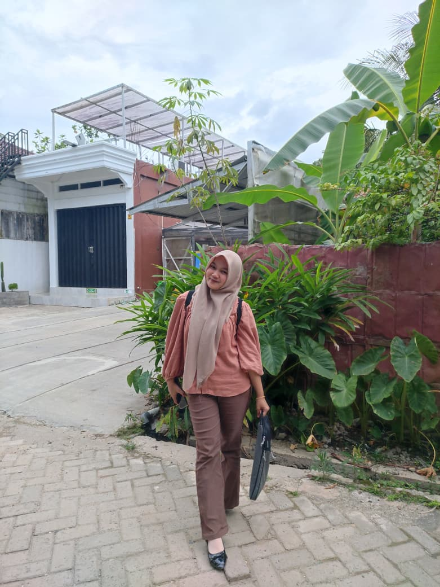

HTML
HTML dipakai untuk membuat kerangka halaman seperti header, section, artikel, dan footer.
Minggu 6
Pada latihan ini kita melanjutkan materi minggu 5. Jika minggu lalu fokus pada selector, background, dan table, sekarang kita belajar menyusun bagian-bagian website dengan Flexbox dan Grid.
Lihat contoh layout
S1 Teknologi Informasi
Semester 4
Tentang Saya
Saya sedang belajar membuat tampilan website yang tidak hanya berwarna, tetapi juga tertata. Pada bagian ini, foto profil dan teks diletakkan berdampingan agar isi halaman lebih seimbang.
Layout seperti ini sering dipakai untuk profil, halaman produk, artikel, dan landing page. Kuncinya adalah memahami elemen induk, elemen anak, dan properti CSS yang mengatur jaraknya.
Layout Grid
Bagian ini menampilkan tiga kartu dengan ukuran seimbang. Saat layar mengecil, susunannya akan berubah menjadi ke bawah.
HTML dipakai untuk membuat kerangka halaman seperti header, section, artikel, dan footer.
Flexbox cocok untuk menu horizontal, dua kolom, tombol sejajar, dan konten yang perlu rata.
Grid cocok untuk kartu, galeri, dan susunan beberapa kolom dengan ukuran yang konsisten.
CSS (Cascading Style Sheets) berfungsi untuk mengatur tampilan dan desain elemen-elemen pada halaman web yang dibuat dengan HTML.
Kontak
Pada contoh ini, teks kontak dan tombol disusun berdampingan menggunakan Flexbox. Di layar kecil, keduanya akan turun ke bawah agar tetap nyaman dibaca.